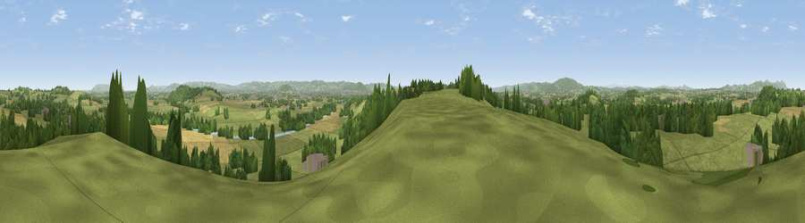

Viewpoint near Hartpury
#12696 in England · top 29% of its area beats it · near HartpuryThe view, rendered

A 360° render of this exact spot computed from the terrain model, tree cover and land cover — summer colours, afternoon light, calibrated against photographs of famous viewpoints. Real trees, hedges and buildings will differ in detail.
The panorama
Grey silhouette: terrain skyline in each direction (720 bearings, Earth curvature and refraction included). Dashed green: skyline with trees (+15 m) and buildings (+8 m) as obstacles. Blue strip: how far the ground is visible on each bearing.
Where the view opens
Wedge length = distance to the farthest visible ground on that bearing (vegetation-aware). Rings at 10, 25 and 50 km.
What fills the view
62% grassland · 19% woodland · 16% cropland · 3% built-up ·
Angular shares of the visible panorama (visual magnitude), not map area. Landscape diversity 0.45 (0–1 Shannon).
Key numbers
More beautiful places nearby
The staircase of upgrades: each row has a higher view potential than everything closer. Driving times are estimates from straight-line distance, calibrated against real road routing — check an actual route before setting out.
| Place | Direction | Drive | Score |
|---|---|---|---|
| Viewpoint near Hasfield | NE · 3 km | ~7 min | 62.7 |
| Viewpoint near Sandhurst | E · 3 km | ~7 min | 66.7 |
| Corse Grove Hill | NNE · 4 km | ~9 min | 67.6 |
| Viewpoint near Churchdown | SE · 9 km | ~18 min | 74.6 |
| Viewpoint near Whaddon | SSE · 10 km | ~20 min | 77.7 |
| Chase End Hill | NNW · 12 km | ~22 min | 81.5 |
| Ragged Stone Hill | NNW · 13 km | ~23 min | 82.5 |
| Midsummer Hill | NNW · 14 km | ~25 min | 83.0 |
51.92071, -2.28313 · source: screening · position refined by local search. Computed location — check access rights before visiting.